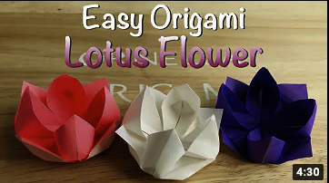

About Us
Contact Us
Paper Parrot
There Are Around 393 Species of Parrots
Parrots Eat With Their Feet
Most Parrots Can Imitate Sound
Paper Butterfly
Butterflies range in size from a tiny 1/8 inch to a huge almost 12 inches.
The top butterfly flight speed is 12 miles per hour.
Butterflies cannot fly if their body temperature is less than 86 degrees.

Paper Lotus
It’s India’s national flower and is symbolic in Buddhism and Hinduism for wealth, prosperity, purity and fertility.
The most common color variations of the lotus flower is pink and white. Other popular lotus colors include blue and red.
The flower can reach up to twenty inches above water, which helps distinguish it from other botanical varieties like marigolds or arrowheads.